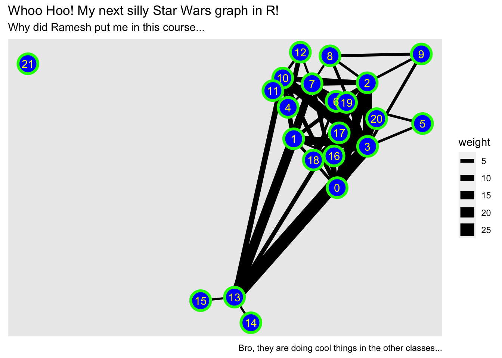
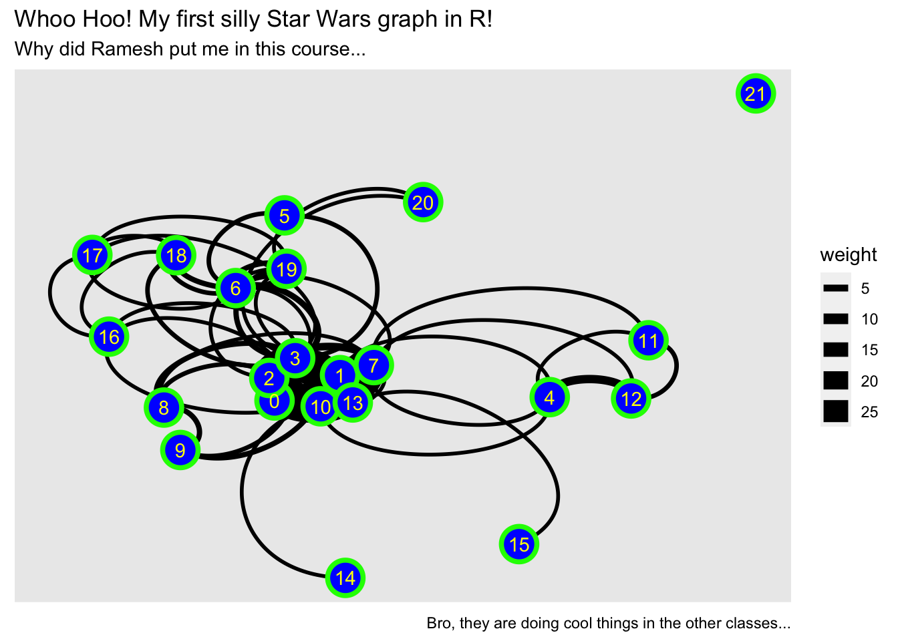
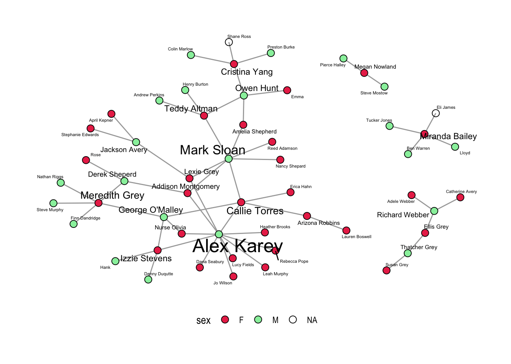

Networks as Metaphors
YOUR NAME HERE
DATE HERE
Introduction
This is an RMarkdown file to introduce the Network Graph set of Metaphors, using R code. We will connect various concepts/ideas and their graph-metaphors.
The method followed will be based on PRIMM:
PREDICT what the code does, write predictions
REUSE the code provided and check what happens
INFER what the
parametersof the code do and write comments to explainMODIFY the
parameterscode provided to understand theoptionsavailable. Write comments to show what you have aimed for and achieved.MAKE : take an idea/concept of your own, and graph it.
Write a short reflection at the end of the kind of metaphors you found in this work.
Graph Metaphors
Network graphs are characterized by two key terms: nodes and edges
Nodes: Entities (Individual Actors? People? Things? Ideas?) to be connected in the network. Synonyms:vertices. Nodes haveIDs.Node list: a data frame with a single column listing the node IDs found in the edge list. You can also add attribute columns to the data frame such as the names of the nodes or grouping variables. ( Type? Class? Family? Country? Subject? )Table 1: Nodes List ID Node Name Attribute? Qualities? Categories? Family? Planet? 1 Ned Nursery School Teacher 2 Jaguar Paw Apocalypto 3 John Snow Epidemiologist Edges: Connections (Interactions? Relationships? Influence? Dependence?) between the entities. Synonyms:links,ties.Edge list: data frame containing two columns: source node and destination node of anedge. Source and Destination havenode IDs.Weighted network graph: An edge list can also contain additional columns describing attributes of the edges such as a magnitude aspect for an edge. If the edges have a magnitude attribute the graph is considered weighted.Table 2: Edges List From ID (=Source)
( From Node ID column!!)To ID (=Destination)
(From Node ID column!!)Weight? Attribute? Qualities? Categories? 1 4 3.5 2 3 Financial Dealings 4 8 Has a crush… Layout: A geometric arrangement ofnodesandedges.Metaphors: Location? Spacing? Distance? Coordinates? Colour? Shape? Size? Provides visual insight due to the
arrangement.Layout Algorithms:Methodto arrangesnodesandedgeswith the aim of optimizing somemetric.Metaphors: Nodes are
massesand edges aresprings. The Layout algorithm minimizes the stretching and compressing of all springs. (BTW, are the Spring Constants K the same for all springs?…)Directed and undirected network graph:
If the distinction between source and target is meaningful, the network is directed. If the distinction is not meaningful, the network is undirected. Directed edges represent an ordering of nodes, like a relationship extending from one nodes to another, where switching the direction would change the structure of the network. Undirected edges are simply links between nodes where order does not matter.
Examples:
The World Wide Web is an example of a directed network because hyperlinks connect one Web page to another, but not necessarily the other way around (Tyner, Briatte, and Hofmann 2017).
Co-authorship networks represent examples of un-directed networks, where nodes are authors and they are connected by an edge if they have written a publication together (Tyner, Briatte, and Hofmann 2017).
When people send e-mail to each other, the distinction between the sender (source) and the recipient (target) is clearly meaningful, therefore the network is directed.
ConnectedandDisconnectedgraphs
- If there is some path from any node to any other node => Connected.
- Else Disconnected
Predict/Reuse/Infer -1
Using tidygraph and ggraph
tidygraph and ggraph are modern R packages for network data. Graph Data setup and manipulation is done in tidygraph and graph visualization with ggraph.
tidygraphData -> “Network Object” in R.ggraphNetwork Object -> Plots using a chosen layout/algo.
Both leverage the power of igraph, which is the Big Daddy of all network packages.
Using the Star Wars dataset
1.Read the data
starwars_nodes <- read_csv("./Data/star-wars-network-nodes.csv")##
## ── Column specification ────────────────────────────────────────────────────────
## cols(
## name = col_character(),
## id = col_double()
## )#
starwars_edges <- read_csv("./Data/star-wars-network-edges.csv")##
## ── Column specification ────────────────────────────────────────────────────────
## cols(
## source = col_character(),
## target = col_character(),
## weight = col_double()
## )#
starwars_nodes## # A tibble: 22 x 2
## name id
## <chr> <dbl>
## 1 R2-D2 0
## 2 CHEWBACCA 1
## 3 C-3PO 2
## 4 LUKE 3
## 5 DARTH VADER 4
## 6 CAMIE 5
## 7 BIGGS 6
## 8 LEIA 7
## 9 BERU 8
## 10 OWEN 9
## # … with 12 more rowsstarwars_edges## # A tibble: 60 x 3
## source target weight
## <chr> <chr> <dbl>
## 1 C-3PO R2-D2 17
## 2 LUKE R2-D2 13
## 3 OBI-WAN R2-D2 6
## 4 LEIA R2-D2 5
## 5 HAN R2-D2 5
## 6 CHEWBACCA R2-D2 3
## 7 DODONNA R2-D2 1
## 8 CHEWBACCA OBI-WAN 7
## 9 C-3PO CHEWBACCA 5
## 10 CHEWBACCA LUKE 16
## # … with 50 more rows#2.Create a network object using tidygraph:
Key function: tbl_graph(). (aka “tibble graph”)
key arguments: nodes, edges and directed
g <- tbl_graph(nodes = starwars_nodes, edges = starwars_edges, directed = TRUE)
g## # A tbl_graph: 22 nodes and 60 edges
## #
## # A directed acyclic simple graph with 2 components
## #
## # Node Data: 22 x 2 (active)
## name id
## <chr> <dbl>
## 1 R2-D2 0
## 2 CHEWBACCA 1
## 3 C-3PO 2
## 4 LUKE 3
## 5 DARTH VADER 4
## 6 CAMIE 5
## # … with 16 more rows
## #
## # Edge Data: 60 x 3
## from to weight
## <int> <int> <dbl>
## 1 3 1 17
## 2 4 1 13
## 3 11 1 6
## # … with 57 more rows#3. Plot using ggraph
Key functions:
ggraph(layout = "......"): Create classic node-edge diagrams; i.e. Sets up the graph. Rather likeggplotfor networks!geom_node_point(aes(.....)): Draws node as “points”.Alternatives exist! Remember thegeoms that we have seen before!geom_edge_link(aes(.....)): Draws edges as “links”. Alternatives exist!geom_node_text(aes(label = ......), repel = TRUE): Adds text labels (non-overlapping).labs(title = "....", subtitle = "....", caption = "...."): Change main titles, axis labels and legend titles. We know this from our work withggplot.
autograph(g)#Describe this graph, in simple words here.
# A more flexible,tweakable way
p <- ggraph(graph = g, layout = "kk") +
#
geom_edge_link(width = 2, color = "pink") +
#
geom_node_point(shape = 21, size = 8, fill = "blue", color = "green", stroke = 2) +
#
geom_node_text(aes(label = id), colour = "yellow") +
#
labs(title = "Whoo Hoo! My first silly Star Wars graph in R!",
subtitle = "Why did Ramesh put me in this course...",
caption = "Bro, they are doing cool things in the other classes...")
pLet us Play with this graph and see if we can use some small changes. Colour? Fill? Width? Size? Stroke? Labs? Of course!
# A more flexible,tweakable way
p <- ggraph(graph = g, layout = "kk") +
#
geom_edge_link(aes(width = weight)) +
#
geom_node_point(shape = 21, size = 8, fill = "blue", color = "green", stroke = 2) +
#
geom_node_text(aes(label = id), colour = "yellow") +
#
labs(title = "Whoo Hoo! My next silly Star Wars graph in R!",
subtitle = "Why did Ramesh put me in this course...",
caption = "Bro, they are doing cool things in the other classes...")
p
Now we are ready ( maybe ?) change the meaning and significance of the entire graph and each element within it, such as the aesthetics / mappings to achieve new meanings or insights.
The elements we can tweak are:
Node Parameters:
- `alpha` (opacity; a value between 0 and 1)
- `colour` (colour of shapes 0-20 and border colour for 21-25)
- `fill` (fill colour for shape 21-25)
- `shape` (node shape; a value between 0 and 25)
- `size` (size of node)
- `stroke` (size of node border)Edge Parameters:
- `edge_colour` (colour of the edge, a fixed colour)
- `edge_width` (width of the edge, a fixed number) or
- `aes(width = some_variable)` + `scale_edge_width(range = c(min_value, max_value))`
- `edge_linetype` (linetype of the edge, defaults to "solid")
- `edge_alpha` (opacity; a value between 0 and 1)
- `label` (an edge label too!!)# Numbered Code lines below: leave these commented
# these are for reference
# Uncommenting: Select all below + Shift/Ctrl/C
ggraph(graph = g,layout = "fr") +
# 1.geom_edge_link(width = 2, color = "pink") +
geom_edge_arc(aes(width = weight)) +
# 2.geom_node_point(shape = 21, size = 8, fill = "blue", color = "green", stroke = 2) +
geom_node_point(shape = 21, size = 8,fill = "blue", color = "green", stroke = 2) +
# 3.geom_node_text(aes(label = id), colour = "yellow") +
geom_node_text(aes(label = id), colour = "yellow") +
labs(title = "Whoo Hoo! My first silly Star Wars graph in R!",
subtitle = "Why did Ramesh put me in this course...",
caption = "Bro, they are doing cool things in the other classes...")
Predict/Reuse/Infer-2
# Arc diagram
ggraph(g, layout = "linear") +
geom_edge_arc(aes(width = weight), alpha = 0.8) +
scale_edge_width(range = c(0.2, 2)) +
geom_node_point(size = 4, colour = "red") +
geom_node_text(aes(label = name), repel = TRUE, size = 2) +
labs(edge_width = "Weight") +
theme_graph()+
theme(legend.position = "top")
############################################## Coord diagram, circular
ggraph(g, layout = "linear", circular = TRUE) +
geom_edge_arc(aes(width = weight), alpha = 0.8) +
scale_edge_width(range = c(0.2, 2)) +
geom_node_point(size = 5,colour = "red") +
geom_node_text(aes(label = name),repel = TRUE, size = 3) +
labs(edge_width = "Weight") +
theme_graph()+
theme(legend.position = "top")
############################################Predict/Reuse/Infer-3
Another Full Example Using Grey’s anatomy dataset
grey_nodes <- read_csv("./Data/greys-nodes.csv")##
## ── Column specification ────────────────────────────────────────────────────────
## cols(
## name = col_character(),
## sex = col_character(),
## race = col_character(),
## birthyear = col_double(),
## position = col_character(),
## season = col_double(),
## sign = col_character()
## )## Warning: 2 parsing failures.
## row col expected actual file
## 51 -- 7 columns 1 columns './Data/greys-nodes.csv'
## 53 -- 7 columns 8 columns './Data/greys-nodes.csv'grey_edges <- read_csv("./Data/greys-edges.csv")##
## ── Column specification ────────────────────────────────────────────────────────
## cols(
## `Leah Murphy` = col_character(),
## `Arizona Robbins` = col_character()
## )head(grey_nodes)## # A tibble: 6 x 7
## name sex race birthyear position season sign
## <chr> <chr> <chr> <dbl> <chr> <dbl> <chr>
## 1 Addison Montgomery F White 1967 Attending 1 Libra
## 2 Adele Webber F Black 1949 Non-Staff 2 Leo
## 3 Teddy Altman F White 1969 Attending 6 Pisces
## 4 Amelia Shepherd F White 1981 Attending 7 Libra
## 5 Arizona Robbins F White 1976 Attending 5 Leo
## 6 Rebecca Pope F White 1975 Non-Staff 3 Geminihead(grey_edges)## # A tibble: 6 x 2
## `Leah Murphy` `Arizona Robbins`
## <chr> <chr>
## 1 Leah Murphy Alex Karev
## 2 Lauren Boswell Arizona Robbins
## 3 Arizona Robbins Callie Torres
## 4 Callie Torres Erica Hahn
## 5 Callie Torres Alex Karev
## 6 Callie Torres Mark Sloanga <- tbl_graph(nodes = grey_nodes, edges = grey_edges)
autograph(ga)###################################################### ggraph(ga, layout = "fr") +
geom_edge_link0(edge_width = 0.5, colour = "grey66") +
geom_node_point(aes(fill = sex), size = 3,shape = 21)+
scale_fill_manual(values = c("F"="#EA3456", "M"="#98EFAB", "NA" = "black")) +
geom_node_text(aes(label = name), size = 1 + 0.5*degree(ga),
#family = "serif",
repel = TRUE) +
scale_size(range = c(0.2, 3)) +
theme_graph() +
theme(legend.position = "bottom")
Make-1
- Fire up a new RMarkdown. Write your name, file_name and date.
- Take any of the following datasets:
Airline Data:
Start with this bit of code in your second chunk, after
set upairline_nodes <-read_csv("./Data/GephiWorkshop-AIRLINES-NODES.csv") ) %>% mutate(Id = Id + 1)airline_edges <- read_csv("./Data/GephiWorkshop-AIRLINES-EDGES.csv") %>% mutate(Source = Source + 1, Target = Target + 1)
The Famous Zachary Karate Club dataset
Try
?karatein the consoledata("karate",package= "igraphdata")Note that this is not a set of nodes, nor edges, but already a graph-object! You will need to just go ahead and plot using
ggraph. No need to create a graph object usingtbl_graph.
Game of Thrones:
GoT <- read_rds("/Data/GoT/GoT.RDS")- Note that this is a list of 7 graphs from Game of Thrones. Select one using
GoT[[index]]where index = 1…7 and then plot directly.
Any other graph dataset from
igraphdata(type?igraphdatain console)
- Inspect the data.
- Create graph objects.
- Write comments in the code
Make-2
This is in groups. The same groups that you have been working in.
Fire up a new RMarkdown. Write in your names, file_name and date.
Go to: Literary Networks
- Instructions are on Teams.
Make your data using the instructions, from Friends or BBT… or LB or HIMYM….
in the nodes CSV, use
Idandnamesas your columns. Any other details in other columns to the right.in your
edgesusefromandtoare your first columns. Entries in these columns can benamesorIds but be consistent and don’t mix.
Decide on 3 questions that you to create graphs for.
Create graph objects.
Write comments in the code
Write Reflection ( ok, a short one!) inside your RMarkdown
Group Submission: RMarkdown with joint authorship.
Ask me for clarifications on what to do after you have read the Instructions in your group.
Read more
Thomas Lin Pedersen - 1 giraffe, 2 giraffe, GO!
Igraph: Network Analysis and Visualization. https://CRAN.R-project.org/package=igraph.
Pedersen, Thomas Lin. 2017a. Ggraph: An Implementation of Grammar of Graphics for Graphs and Networks. https://CRAN.R-project.org/package=ggraph.
———. 2017b. Tidygraph: A Tidy Api for Graph Manipulation. https://CRAN.R-project.org/package=tidygraph.
Tyner, Sam, François Briatte, and Heike Hofmann. 2017. “Network Visualization with ggplot2.” The R Journal 9 (1): 27–59. https://journal.r-project.org/archive/2017/RJ-2017-023/index.html.
Network Datasets https://icon.colorado.edu/#!/networks